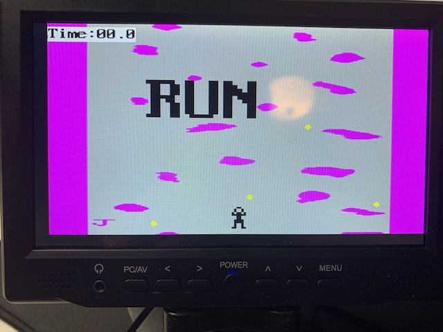
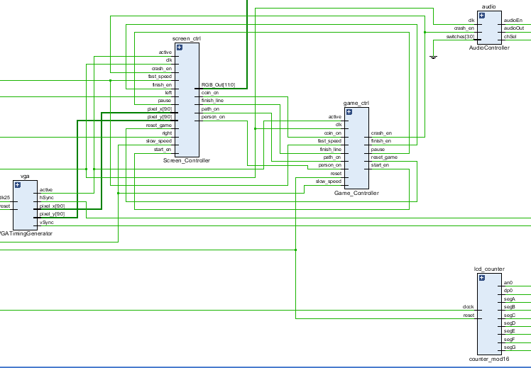
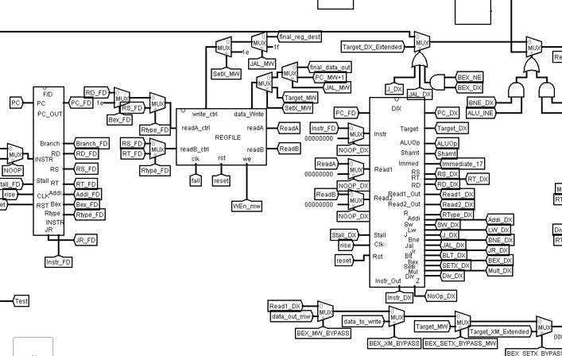
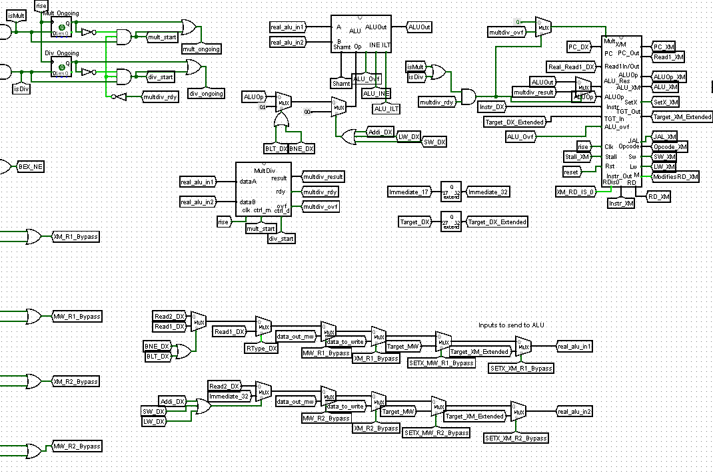

Verilog Sludge Runner Game
AUG 2020 - DEC 2020
Independent Project |
Schematic Overview |
Logisim Representation |
 |
The TaskThe first part of the project involved designing and implementing a multi-cycle pipelined processor in Verilog. I designed a fully working processor in Logisim with an ALU, Register Files, and Boothe's Multiplication/ Non-Restoring Division module before incorporating all elements into a full processor. After thoroughly testing in Logisim, the finished product was coded in structural Verilog. This processor aheres to the (MIPS-like) Duke ISA which includes R-Type Instructions, I-Type Instructions, Jumps, Branches, Loads, and Stores. Afterwards, the processor was incorporated into my final project design of a "Sludge Runner" game where the user controls a sprite left and right to avoid collision with falling obstacles. The user's goal is to finish the course as fast as possible and has the ability to speed up and slow down to try to beat the high score. The processor was used to trigger MIPS code for in-game conditions and collisions. Additionally, it was used for score tracking and the final score calculation. Reading from memory for sprites and text as well as the main collision logic was handled via behavioral Verilog.You can visit a clone of this repository here! |
My Approach
|
Video Demonstration
|
|